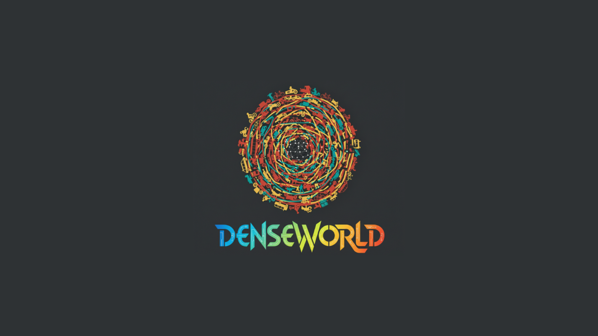

Amitava Das
Professor, BITS Goa | Former Research Associate Professor, AIISC, USA

From 714 source videos
Coverage across India
121 GB total data volume
65+ values, v3 structured tags
- 6 metros, 68k+ clips
- 15 cities, 40k+ clips
- 15 fields, 65+ values, v3 structured tags
Predictive state quality improves as temporal context accumulates, even under highly variable street-level density.
Dummy comparative results indicate stronger adaptation in mixed-density environments with minimal planner delay.
Professor, BITS Goa | Former Research Associate Professor, AIISC, USA

GenAI Leadership @ AWS | Stanford AI | Ex-Amazon Alexa, Nvidia, Qualcomm | EB-1 "Einstein Visa" Recipient | EMNLP 2023 Outstanding Paper Award

Applied Research Scientist Lead at Facebook AI Research | 6k+ citations | Ex-Citadel | CMU | IIT Kanpur | Startup Advisor & Mentor | Angel Investor | EB1A green card recipient

AI @ Meta | Ex-Amazon, Oracle, PANW | Stanford AI | EMNLP Outstanding Paper Award Recipient